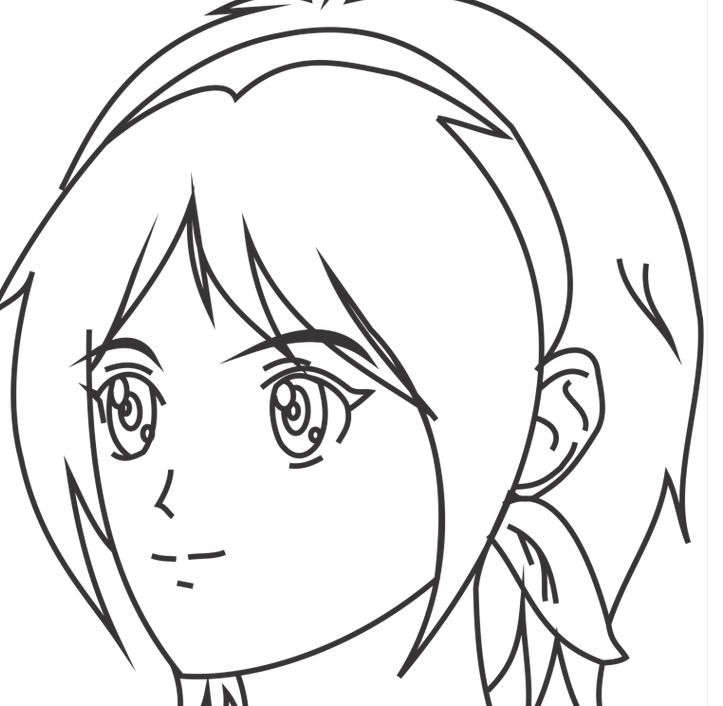

how to draw
selamat datang di kelas membuat kepala manga
banyak cara dalam menggambar manga kita hanya perlu menggunakan imajinasi kita dan sedikit bantuan rangka dan ini dia cara membuat kepala di manga
membuat wajah tampak depan
1.buatlah rangkanya
anda bisa membuat lingkaran terlebih dahulu dan di susul oleh garis-gris untuk menyusaun stuktur wajah dan penempatan mata dan organ-organ lainnya bisa anda tiru layanya gambar di atas
2.taruh semua bagian pada tempatnya
disini anda menentukan dimana letak-letak mata dan organ lainnyausahakan anda telah membuat muka baru di susul rambut
3.hapus rangka
ketika anda telah selesai membuat gambaran anda anda tinggal menebalkan dan menghapus rangkanya hingga jadilah seperti gambar di atas
membuat wajah 3/4
1.seperti tadi tapi buatlah garis cembung
ini bertujuan untuk menampilkan sosok yang sedang menghadap 3/4
2.taruh semua bagian pada tempatnya
disini anda menentukan dimana letak-letak mata dan organ lainnyausahakan anda telah membuat muka baru di susul rambut
3.hapus rangka
ketika anda telah selesai membuat gambaran anda anda tinggal menebalkan dan menghapus rangkanya hingga jadilah seperti gambar di atas
membuat wajah 1/2
1.buatlah rangka
berbeda dari yang lain buatlah garis vertikal diluar lingkaran dan mulai membuat rangka
2.taruh semua bagian pada tempatnya
disini anda menentukan dimana letak-letak mata dan organ lainnyausahakan anda telah membuat muka baru di susul rambut
3.hapus rangka
ketika anda telah selesai membuat gambaran anda anda tinggal menebalkan dan menghapus rangkanya hingga jadilah seperti gambar di atas
tambahan
dibawah ini kami menyediakan berbagai contoh-contoh seperti mata rambut dan tutorial-turorial tambahan selamat mencoba